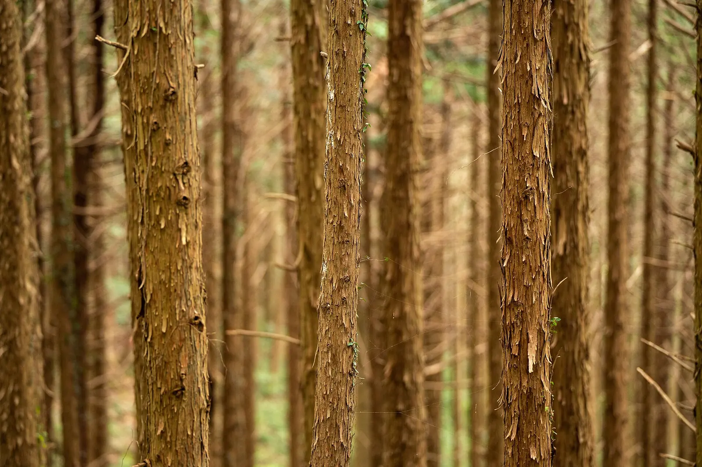
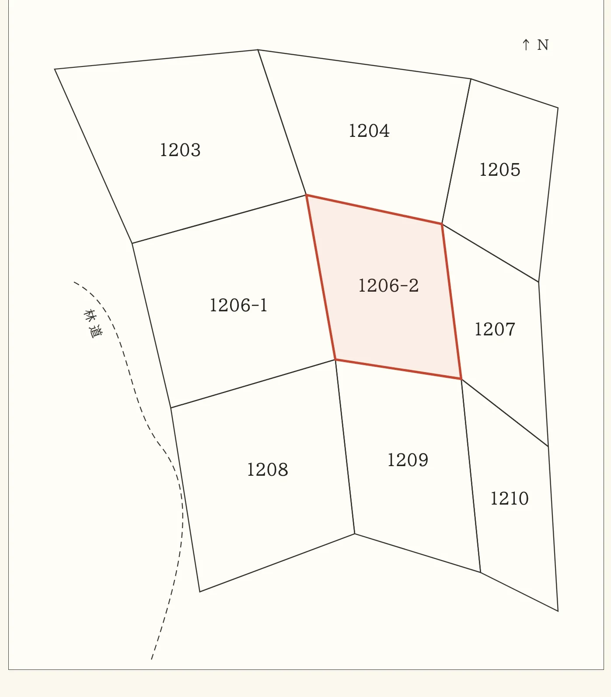

相談について
たいてい、こういうところから始まります
相談に来られる方の多くは、その山を見たことがありません。 場所は「〇〇町のあたり」としか分からない。 毎年、固定資産税の通知だけが届く。 名義は、亡くなった祖父のまま。 私たちは、まず今の状態をはっきりさせるところから始めます。
まず、あなたの場合を確かめる

写真: Alpsdake(CC0)/ Tonytakuya(パブリックドメイン)/ Raita Futo(CC BY 2.0)/ 自社
ある山の記録
どこで止まっているかを、たどる(例)
山の事情は、たいてい何十年もかけて積み重なっています。 どこで止まっているのかを、一緒にたどります。
年と出来事は例です。相続登記の申請は、2024 年 4 月から義務になりました。
売ることを、前提にはしていません。
持ち続ける、管理を頼む、隣の方に譲る、売る。 それぞれの手間と費用を並べてから考えます。 売れない山も多く、そのことも最初にお伝えします。 引き受け手は、隣の方や地域の事業者も含めて探します。
さとやま不動産について山の相談票
あなたの場合は、何から始めればいいか
当てはまるものに印を付けてください。最初にすることが出ます。印の内容は、申し込みの用紙で送信するまで、どこにも送られません。
費用
費用がかかるのは、了承をいただいてから
- 最初の聞き取り
- 無料
- お申し込みから 3 営業日以内にご連絡します。電話・オンライン・対面のどれでも。
- 整理メモ
- 無料
- 分かったこと、まだ分からないこと、考えられる選択肢を 1 枚にまとめてお渡しします。
- 現地確認・調査など
- 事前にお見積り
- 内容と金額を先にお伝えします。了承なく費用がかかることはありません。
対応地域
相談は全国から、現地は地域の事業者と
全国から受け付けています
現地の確認は、地域の森林組合や林業事業体と連携し、場所ごとにご案内します。
運営 日本GXグループ株式会社ご相談の受付 申し込みの用紙(フォーム)ご連絡 3 営業日以内